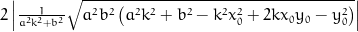
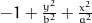
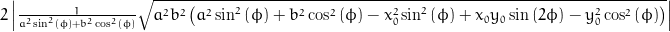

Assumed to be centred at 0, the coordinate system origin.
0=
Parametric solution (t). Solutions were derived automatically using sympy.
Points in cartesian coordinates (x, y, z)
x = x0 + (-pow(a, 2)*k*y0 - pow(b, 2)*x0 + sqrt(pow(a, 2)*pow(b, 2)*(pow(a, 2)*pow(k, 2) + pow(b, 2) - pow(k, 2)*pow(x0, 2) + 2*k*x0*y0 - pow(y0, 2))))/(pow(a, 2)*pow(k, 2) + pow(b, 2));
y = k*(-pow(a, 2)*k*y0 - pow(b, 2)*x0 + sqrt(pow(a, 2)*pow(b, 2)*(pow(a, 2)*pow(k, 2) + pow(b, 2) - pow(k, 2)*pow(x0, 2) + 2*k*x0*y0 - pow(y0, 2))))/(pow(a, 2)*pow(k, 2) + pow(b, 2)) + y0;
x = x0 - (pow(a, 2)*k*y0 + pow(b, 2)*x0 + sqrt(pow(a, 2)*pow(b, 2)*(pow(a, 2)*pow(k, 2) + pow(b, 2) - pow(k, 2)*pow(x0, 2) + 2*k*x0*y0 - pow(y0, 2))))/(pow(a, 2)*pow(k, 2) + pow(b, 2));
y = -k*(pow(a, 2)*k*y0 + pow(b, 2)*x0 + sqrt(pow(a, 2)*pow(b, 2)*(pow(a, 2)*pow(k, 2) + pow(b, 2) - pow(k, 2)*pow(x0, 2) + 2*k*x0*y0 - pow(y0, 2))))/(pow(a, 2)*pow(k, 2) + pow(b, 2)) + y0;
Distance between crossing points.
sol1 = (-pow(a, 2)*k*y0 - pow(b, 2)*x0 + sqrt(pow(a, 2)*pow(b, 2)*(pow(a, 2)*pow(k, 2) + pow(b, 2) - pow(k, 2)*pow(x0, 2) + 2*k*x0*y0 - pow(y0, 2))))/(pow(a, 2)*pow(k, 2) + pow(b, 2));
sol2 = -(pow(a, 2)*k*y0 + pow(b, 2)*x0 + sqrt(pow(a, 2)*pow(b, 2)*(pow(a, 2)*pow(k, 2) + pow(b, 2) - pow(k, 2)*pow(x0, 2) + 2*k*x0*y0 - pow(y0, 2))))/(pow(a, 2)*pow(k, 2) + pow(b, 2));
distance = 2*fabs(sqrt(pow(a, 2)*pow(b, 2)*(pow(a, 2)*pow(k, 2) + pow(b, 2) - pow(k, 2)*pow(x0, 2) + 2*k*x0*y0 - pow(y0, 2)))/(pow(a, 2)*pow(k, 2) + pow(b, 2)));
Assumed to be centred at 0, the coordinate system origin.
0=Parametric solution (t). Solutions were derived automatically using sympy.
Points in cartesian coordinates (x, y, z)
x = x0 + (-pow(a, 2)*y0*sin(phi) - pow(b, 2)*x0*cos(phi) + sqrt(pow(a, 2)*pow(b, 2)*(pow(a, 2)*pow(sin(phi), 2) + pow(b, 2)*pow(cos(phi), 2) - pow(x0, 2)*pow(sin(phi), 2) + x0*y0*sin(2*phi) - pow(y0, 2)*pow(cos(phi), 2))))*cos(phi)/(pow(a, 2)*pow(sin(phi), 2) + pow(b, 2)*pow(cos(phi), 2));
y = y0 + (-pow(a, 2)*y0*sin(phi) - pow(b, 2)*x0*cos(phi) + sqrt(pow(a, 2)*pow(b, 2)*(pow(a, 2)*pow(sin(phi), 2) + pow(b, 2)*pow(cos(phi), 2) - pow(x0, 2)*pow(sin(phi), 2) + x0*y0*sin(2*phi) - pow(y0, 2)*pow(cos(phi), 2))))*sin(phi)/(pow(a, 2)*pow(sin(phi), 2) + pow(b, 2)*pow(cos(phi), 2));
x = x0 - (pow(a, 2)*y0*sin(phi) + pow(b, 2)*x0*cos(phi) + sqrt(pow(a, 2)*pow(b, 2)*(pow(a, 2)*pow(sin(phi), 2) + pow(b, 2)*pow(cos(phi), 2) - pow(x0, 2)*pow(sin(phi), 2) + x0*y0*sin(2*phi) - pow(y0, 2)*pow(cos(phi), 2))))*cos(phi)/(pow(a, 2)*pow(sin(phi), 2) + pow(b, 2)*pow(cos(phi), 2));
y = y0 - (pow(a, 2)*y0*sin(phi) + pow(b, 2)*x0*cos(phi) + sqrt(pow(a, 2)*pow(b, 2)*(pow(a, 2)*pow(sin(phi), 2) + pow(b, 2)*pow(cos(phi), 2) - pow(x0, 2)*pow(sin(phi), 2) + x0*y0*sin(2*phi) - pow(y0, 2)*pow(cos(phi), 2))))*sin(phi)/(pow(a, 2)*pow(sin(phi), 2) + pow(b, 2)*pow(cos(phi), 2));
Distance between crossing points.
sol1 = (-pow(a, 2)*y0*sin(phi) - pow(b, 2)*x0*cos(phi) + sqrt(pow(a, 2)*pow(b, 2)*(pow(a, 2)*pow(sin(phi), 2) + pow(b, 2)*pow(cos(phi), 2) - pow(x0, 2)*pow(sin(phi), 2) + x0*y0*sin(2*phi) - pow(y0, 2)*pow(cos(phi), 2))))/(pow(a, 2)*pow(sin(phi), 2) + pow(b, 2)*pow(cos(phi), 2));
sol2 = -(pow(a, 2)*y0*sin(phi) + pow(b, 2)*x0*cos(phi) + sqrt(pow(a, 2)*pow(b, 2)*(pow(a, 2)*pow(sin(phi), 2) + pow(b, 2)*pow(cos(phi), 2) - pow(x0, 2)*pow(sin(phi), 2) + x0*y0*sin(2*phi) - pow(y0, 2)*pow(cos(phi), 2))))/(pow(a, 2)*pow(sin(phi), 2) + pow(b, 2)*pow(cos(phi), 2));
distance = 2*fabs(sqrt(pow(a, 2)*pow(b, 2)*(pow(a, 2)*pow(sin(phi), 2) + pow(b, 2)*pow(cos(phi), 2) - pow(x0, 2)*pow(sin(phi), 2) + x0*y0*sin(2*phi) - pow(y0, 2)*pow(cos(phi), 2)))/(pow(a, 2)*pow(sin(phi), 2) + pow(b, 2)*pow(cos(phi), 2)));
By Johannes Buchner | Source code: https://github.com/JohannesBuchner/intersection | Open a issue or pull request if you would like somthing added